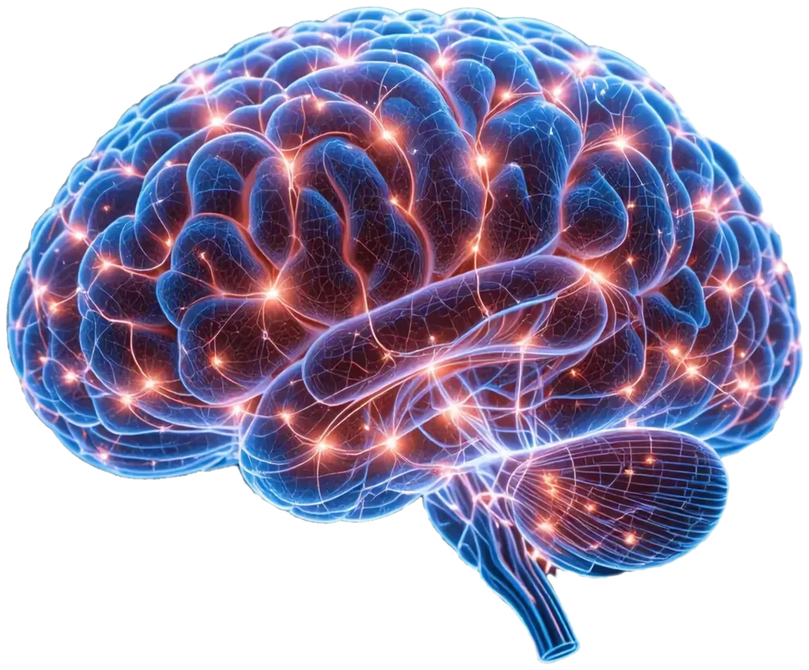
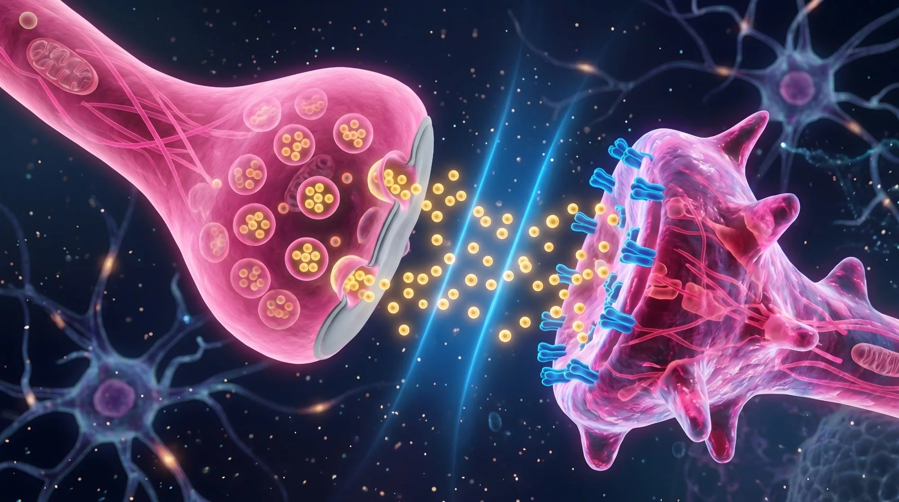
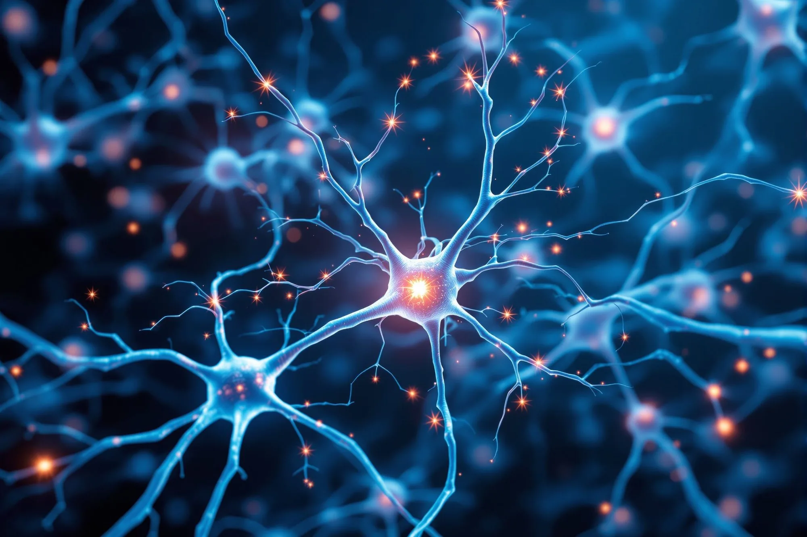

Cerebro predictivo
La mente no espera pasivamente la respuesta: genera constantemente una hipótesis previa frente a la incertidumbre (Feldman Barrett). Stanislas Dehaene lo llama generación de hipótesis a priori.

Tres sistemas trabajan juntos cada vez que enfrentas una pista difícil.
La mente no espera pasivamente la respuesta: genera constantemente una hipótesis previa frente a la incertidumbre (Feldman Barrett). Stanislas Dehaene lo llama generación de hipótesis a priori.
Utilizarás analogías para tender puentes entre lo que ya comprendes y los conceptos abstractos no resueltos.
Ajusta el modelo mental tras la confirmación o el error, transformando la frustración en plasticidad cerebral real.
Sofía es brillante, pero ante las pistas difíciles prefiere dejar la casilla en blanco por miedo al fallo.
En este recurso te enfrentarás a la incomodidad deliberada de "adivinar con fundamento" antes de verificar.
Selecciona la respuesta que creas correcta ante cada acertijo.
La opción "Verificar respuesta" se habilita solo cuando has propuesto una.
Escribe tu propia analogía para poder pasar al siguiente acertijo.
Tendrás que escribir una hipótesis o seleccionar una respuesta ante unos acertijos. Una vez propongas una respuesta, el recurso te habilitará la opción "Verificar respuesta"; antes de tu respuesta hipotética permanecerá bloqueada.
Resuelve cada acertijo y declara tu analogía para desbloquear el siguiente.
Pista del acertijo"Siento que vuelo porque respondo todo rápido y sin dudar, pero al día siguiente el examen me deja en blanco. ¿Qué trampa cognitiva he activado?"

Pista del acertijo"Le suele pasar a Sofía que, ante la primera duda, declina. No es falta de capacidad, es el impulso de huir hacia algo más fácil apenas surge la dificultad. ¿Qué sistema neurocognitivo debe tomar el timón?"

Pista del acertijo"Sofía cree en ocasiones que es mejor no arriesgarse. Dejar la casilla en blanco protege el ego, pero congela la mente. En beneficio del aprendizaje, ¿vale la pena equivocarse?"
Completa los tres acertijos y declara tus analogías para verlas reunidas aquí.
Estos son los puentes que tendiste entre lo que ya comprendías y cada concepto.
A diferencia de Sofía, esta vez no dejaste ninguna casilla en blanco: propusiste, verificaste y ajustaste tu modelo mental.